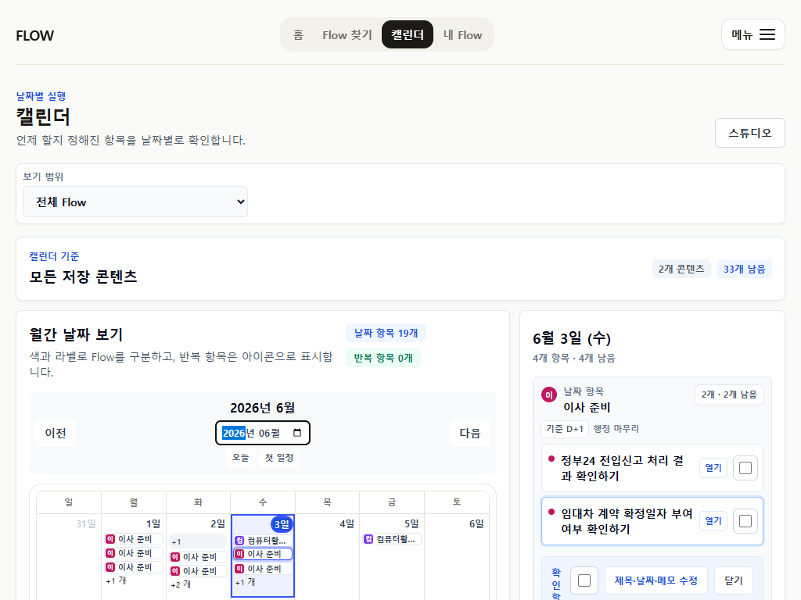

“콘텐츠 → 실행” 차별점은 분명하다
Todoist나 TickTick처럼 빈 할 일 목록을 만드는 앱이 아니라, URL/메모/원문을 일정·체크·문서로 변환하는 포지션은 살아 있다.
FlowMe UX/UI competitive review · 2026-07-11
FlowMe는 일반 todo/calendar/health/diet 앱을 그대로 따라가면 안 됩니다. 다만 사용자는 이미 그 앱들의 기준선에 익숙하므로, FlowMe의 화면도 “빠른 입력, 오늘 실행, 일정 확인, 기록/회고, 내 도구로 이동”의 기본 문법을 더 선명하게 써야 합니다.
Todoist나 TickTick처럼 빈 할 일 목록을 만드는 앱이 아니라, URL/메모/원문을 일정·체크·문서로 변환하는 포지션은 살아 있다.
현재 화면은 기능 검증이 많이 쌓인 만큼 카드, 패널, 상태 문구가 많다. 일상관리 앱 사용자 기준으로는 “지금 무엇을 하면 되는지”가 약해진다.
Home, Flow 찾기, My Flow, Calendar, Step detail을 다시 단순화하고, health/diet/routine은 데이터 연동보다 수동 기록·추세·회고부터 얹는 편이 맞다.
한 줄 판단: 현재 FlowMe는 “조건부 private beta 사용 가능” 수준의 실행 흐름은 갖췄지만, 대중적 일상관리 앱처럼 보이려면 입력/오늘/일정/상세/export의 시각적 위계를 한 단계 더 줄여야 한다.
근거는 현재 repo의 P21 final review package, longitudinal journey review, P22 reassessment, 그리고 주요 스크린샷을 기준으로 삼았다. 이 평가는 실제 사용자 조사 결과가 아니라 화면·문서·자동 evidence 기반 리뷰다.

Home: URL/메모 진입은 보이지만 “콘텐츠를 어떤 도구 결과로 바꿔주는지”가 더 강하게 보여야 한다.

Flow 찾기: URL 입력과 카탈로그가 같은 화면에 있어 좋지만, 입력 후 결과 상태가 길어지면 밀도가 급격히 오른다.

URL miss: “아직 없음, 저장 대기, 초안 요청”의 상태가 많아 첫 결정을 어렵게 만든다.

My Flow: Today 실행 큐는 방향이 맞다. 다만 경쟁 todo 앱처럼 1~3개 핵심 행동만 더 또렷하게 보여도 충분하다.

Calendar: 같은 날짜 다중 Flow 표현은 개선됐지만, 월간 grid보다 선택일 agenda가 모바일 첫 표면이 되어야 한다.

Step detail: 실행과 편집 분리는 P22에서 좋아졌지만, 여전히 상세 패널 안의 정보 종류가 많다.

Wide Home: 여백은 충분하지만, 우측 추천 카드가 “서비스 사용법”보다 먼저 읽힐 위험이 있다.

Wide Calendar: 정보량은 수용 가능하다. 모바일과 데스크톱의 우선순위를 다르게 잡는 것이 맞다.
| 서비스 | 사용자가 기대하는 UX 문법 | FlowMe에 줄 시사점 |
|---|---|---|
| Todoist | 빠른 자연어 capture, Today/Upcoming/filter 중심, 템플릿으로 시작 장벽을 낮춤. | FlowMe도 “URL/메모를 빨리 넣고 결과를 본다”가 첫 화면의 중심이어야 한다. 카탈로그 설명보다 변환 결과 preview가 먼저다. |
| Microsoft To Do | My Day와 제안으로 하루 범위를 작게 만든다. 공식 설명도 daily list를 작게 유지하라고 말한다. | My Flow Today는 전체 backlog가 아니라 오늘의 1~3개 핵심 실행으로 보여야 한다. |
| TickTick | 할 일, 캘린더, 습관, Pomodoro, Eisenhower, 통계까지 있지만 빠른 입력과 여러 view mode로 나눈다. | FlowMe는 기능을 늘리기보다 “같은 Flow를 Today, Calendar, detail, export로 보는 모드”를 더 명확히 분리해야 한다. |
| Google Calendar / Tasks | 날짜가 있는 task만 calendar에 나타난다. 날짜 없는 일과 calendar 이벤트의 경계를 유지한다. | FlowMe Calendar도 날짜 있는 Step만 보여주고, 날짜 없는 체크리스트는 My Flow 전체나 Step detail에 남겨야 한다. |
| Notion Calendar | database의 date property가 calendar에 올라오고, 회의 note/page와 연결된다. | FlowMe가 Notion처럼 workspace가 될 필요는 없지만, Step의 source/memo/export가 연결된 “작은 실행 record”처럼 보여야 한다. |
| Any.do | Tasks, Calendar, Daily planner, Reminders, Widgets, shared grocery 같은 생활 단위 기능을 한 화면 언어로 묶는다. | FlowMe도 “이사/공부/식단/건강”을 내부 데이터 타입보다 생활 문제 단위로 묶어야 한다. |
| Apple Health / Samsung Health | 건강 데이터는 기록, 추세, coaching, privacy, 민감 정보 분리를 강하게 전제한다. | 건강/운동 Flow는 조언 생성보다 source caution, 수동 체크, 추세 메모, 회고가 먼저다. |
| Cronometer / MyFitnessPal | 식단은 photo/barcode/voice/search처럼 입력 부담을 낮추고, diary와 nutrient snapshot으로 피드백을 준다. | 식단 Flow는 레시피 카드보다 “오늘 먹은 것 기록, 다음 준비, 장보기 export, 주간 식단표”가 자연스럽다. |
기능의 뼈대는 경쟁 앱과 직접 비교해도 나쁘지 않다. 특히 “외부 콘텐츠를 내 실행 artifact로 바꾼다”는 축은 분명하다.
문제는 기능 부족보다 표면 정리다. 카드가 많고 설명이 길어지면서 “오늘 무엇을 할지”보다 “이 기능이 어떤 상태인지”를 먼저 읽게 된다.
Hero는 “콘텐츠를 일정과 할 일로 저장”보다 한 단계 구체적으로 “URL 붙여넣기 / 메모 쓰기 → 일정·체크·문서로 만들기”를 보여준다.
아직 Flow가 없을 때는 상태명을 줄이고, 사용자가 할 수 있는 첫 행동을 “초안으로 보관” 하나로 좁힌다.
Microsoft To Do의 My Day처럼 오늘 화면은 모든 구조를 보여주기보다 1~3개 핵심 실행을 보여준다.
월간 grid는 날짜 선택기 역할로 줄이고, 선택일 agenda가 화면 상단에 온다.
기본은 실행, 편집은 명시적으로 진입, export와 원문은 접힌 보조 영역으로 둔다.
Apple/Samsung Health처럼 자동 data integration을 따라가기 전에, 수동 log와 회고 trend를 먼저 만든다.
블로그, 유튜브, 공식 안내, 내 메모를 일정·체크·문서로 바꿉니다.
이 URL은 “원룸 이사 D-30”으로 바로 시작할 수 있습니다.
URL과 메모를 보관하고, 초안을 직접 손볼 수 있게 합니다.
초안으로 보관작은 grid는 날짜 선택과 개수 표시만 담당합니다.
바로 할 일: 정부24에서 전입신고 처리 결과를 확인합니다.
오늘 먹은 것, 컨디션, 다음 주 수정 메모를 남깁니다. 건강 조언은 하지 않습니다.
| 우선순위 | 목표 | 구체 작업 | 하지 않을 것 |
|---|---|---|---|
| P0 | 첫 화면과 Flow 찾기 시각 위계 정리 | Home 통합 입력 카드, URL hit/miss 결과 압축, 추천 카드 밀도 조정, 모바일 첫 viewport CTA 1개. | AI 자동 생성 전면화, 카탈로그 확장, Studio 승격. |
| P0 | My Flow 실행판 단순화 | Today Top 3, 완료 checkbox 우선, 상세는 실행/편집/export 3층 구조로 정리. | 전체 Flow 편집기, 버전 트리 UI. |
| P1 | Calendar agenda-first polish | 모바일 선택일 agenda 상단, month grid는 picker와 count, 날짜 없는 Step은 Calendar에서 제외. | Google/Apple/Outlook 직접 sync. |
| P1 | 식단·운동·건강 기록형 Flow 추가 검토 | 주간 식단표, 장보기, 운동 반복 세션, 컨디션 기록, official caution 분리. | 의료/영양 조언, HealthKit/Galaxy 연동, 자동 진단. |
| P2 | 반복 사용과 회고 loop | 완료 후 비공개 회고, 다시 실행, 원본 수정 요청, local backup/restore 이해도 검증. | 공개 평점, creator marketplace, social proof. |
지금 바로 해야 할 일은 “더 많은 앱 기능 추가”가 아니라, 이미 있는 기능을 기존 todo/calendar/health/diet 앱 사용자의 눈높이에 맞게 더 작고 선명한 화면 단위로 재배열하는 것이다.